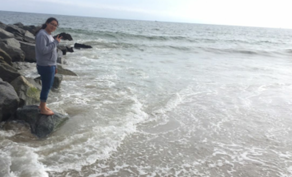

<!DOCTYPE html>
<html lang="en">
  <body bgcolor= "#ffb3b3">
  <head>
   <style>
     body{background-image:url("https://s-media-cache-ak0.pinimg.com/236x/74/4c/e6/744ce6f62b4f8de089d9f87ab7a856fc--cellphone-wallpaper-phone-wallpapers.jpg")}
    <title> About Me </title>
   </head>   
<body>
  <center><h1>About Me</h1></center>
  <p>
    <center></center>
    </p>
  <center><h1> CECILIA DIAZ </h1></center>
      <p> I am 17 years old born on March 17, 2000. I go to Animo Leadership. I live with my parents and three sisters.<br/>
  I the second oldest, so I have a lot of responsiblities but it's ok.</p>
  <h2> Favorite Websites </h2>
  <p>
    <a href="https://mail.google.com/mail/" target="_blank"> Gmail </a></p>
  <p>
    <a href="https://www.youtube.com/" target="_blank"> Youtube </a></P>
    <center><h2>Fun Fact about Me</h2></center>
  <p> I am allergic to Maguey, centuryplant. </p>
    <p>  </p>
  <!--add image-->
  <h2> Likes </h2>
  <ul>
    <li> Food </li>
    <li> KPOP </li>
    <li> watermelon </li>
  </ul>
  <h2> Dislikes </h2>
  <ul>
    <li> random noises </li>
    <li> cleaning </li>
    <li> Starvation </li>
  <h2> Reflection 6/27/17 </h2>
    <a href="reflection.html">Reflections GWC</a>
  
        </body>
      </html>
